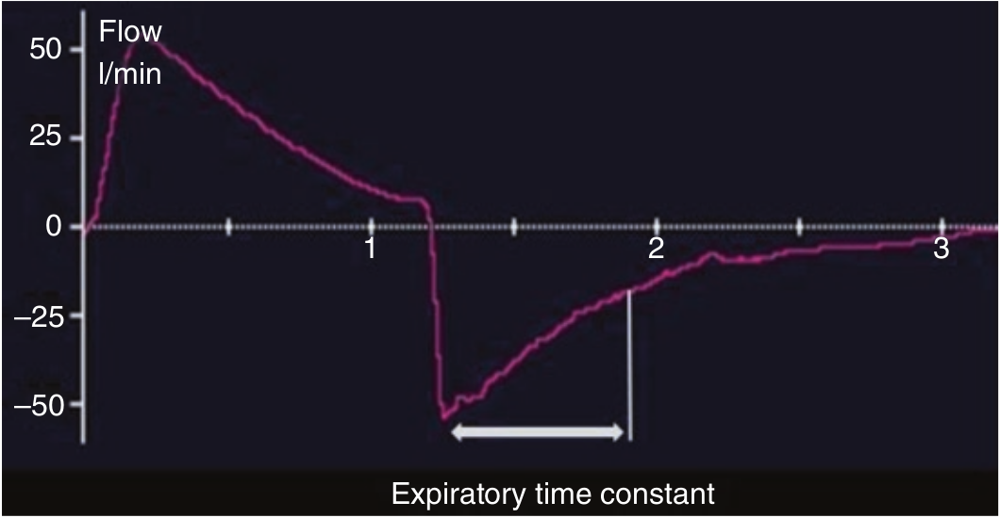

شکل منحنی شدت جریان بازدمی یک الگوی کاهش نمائی را تا رسیدن به صفر دنبال می کند. دینامیک تخلیه ریه بستگی به کمپلیانس ومقاومت سیستم تنفسی و مدار ونتیلاتور دارد که همگی بصورت ثابت زمانی بازدم بیان می شوند. ثابت زمانی بازدمی عبارت است مدت زمان لازم برای کاهش ۶۳٪ شدت جریان بازدمی نسبت به مقدار حداکثر اولیه. در ریه طبیعی مقدار آن ۰/۵ - ۰/۷ ثانیه است. زمانی به اندازه دو و سه ثابت زمانی به ترتیب سبب کاهش شدت جریان بازدمی به میزان ۸۶٪ و ۹۵٪ مقدار حداکثر اولیه میشوند.

در بیمار دارای ریه طبیعی و بازدم غیرفعال، شدت جریان بازدمی:
۱ - شکل آن تابع مکانیک سیستم تنفسی است
۲ - در یک بازدم کامل کمتر از ۳ ثانیه طول میکشد
۳ - قبل از پایان بازدم همیشه به صفر میرسد
۴ - مقدار آن با مرطوب کننده های گرم کننده و ادوات تبادل رطوبت و گرما یکسان است
۵ - تمام موارد فوق